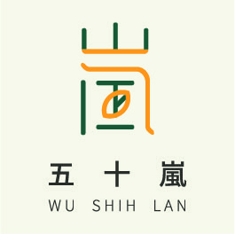
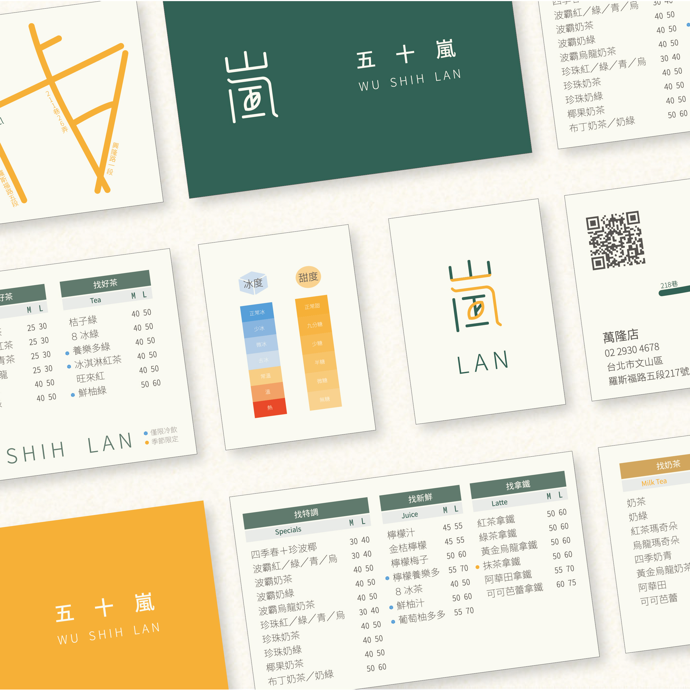
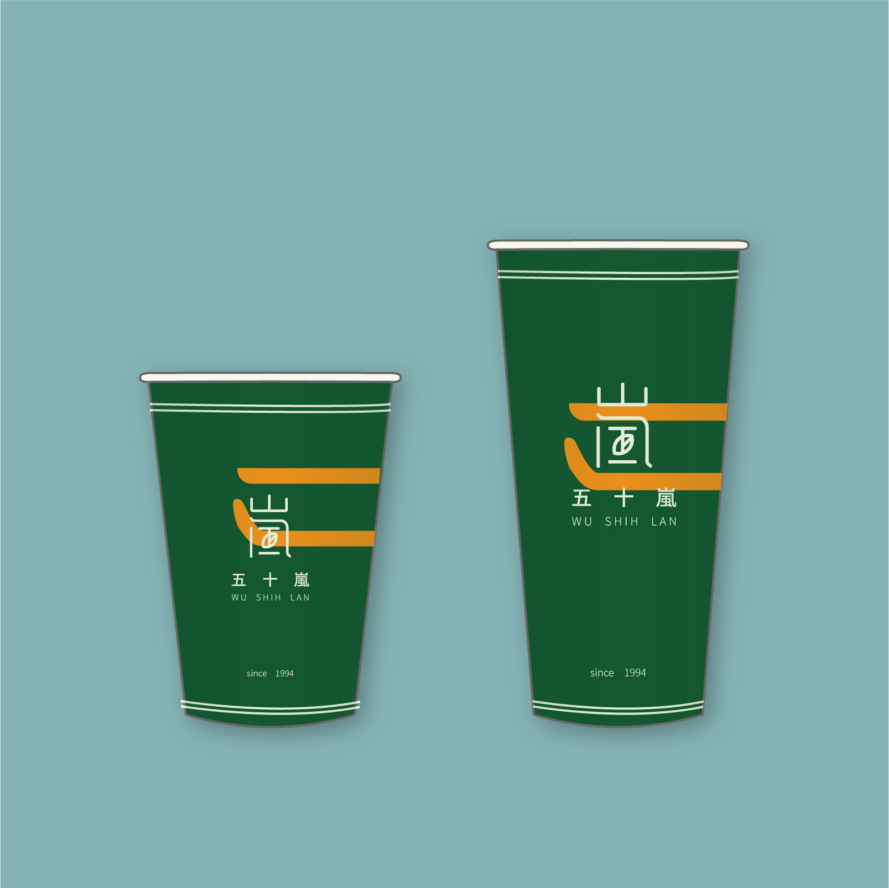
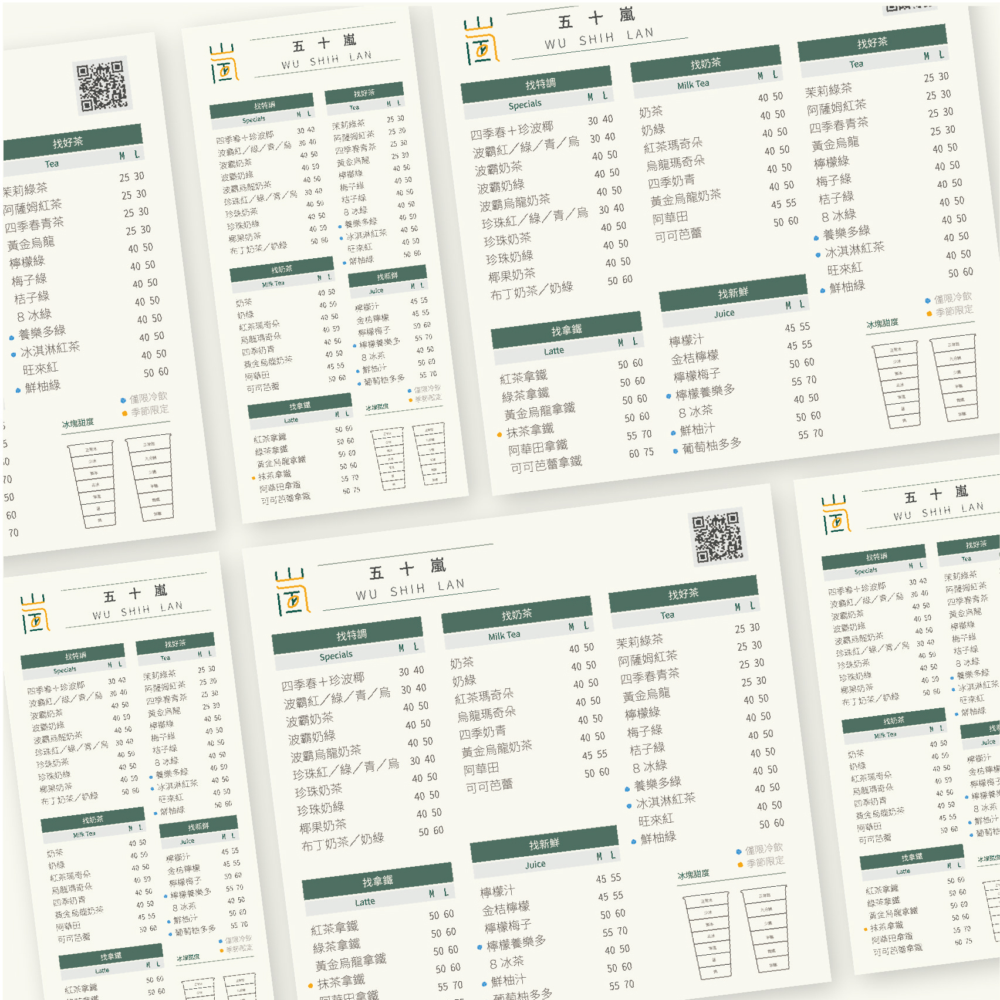
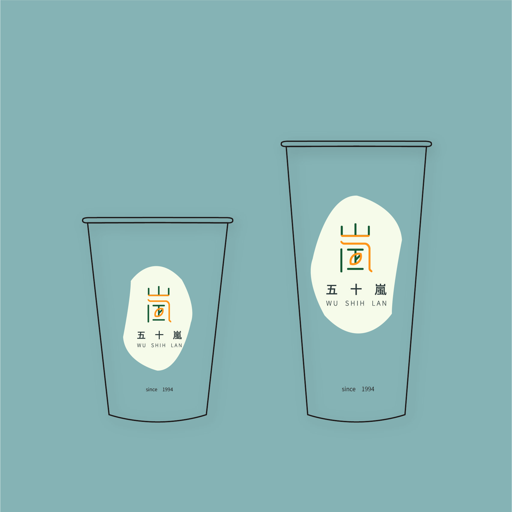
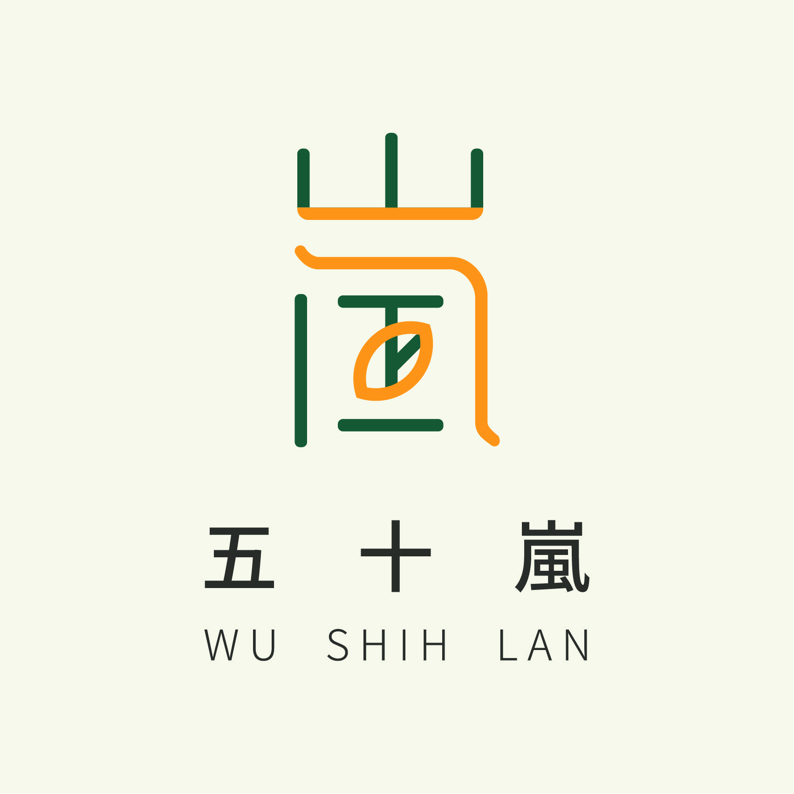
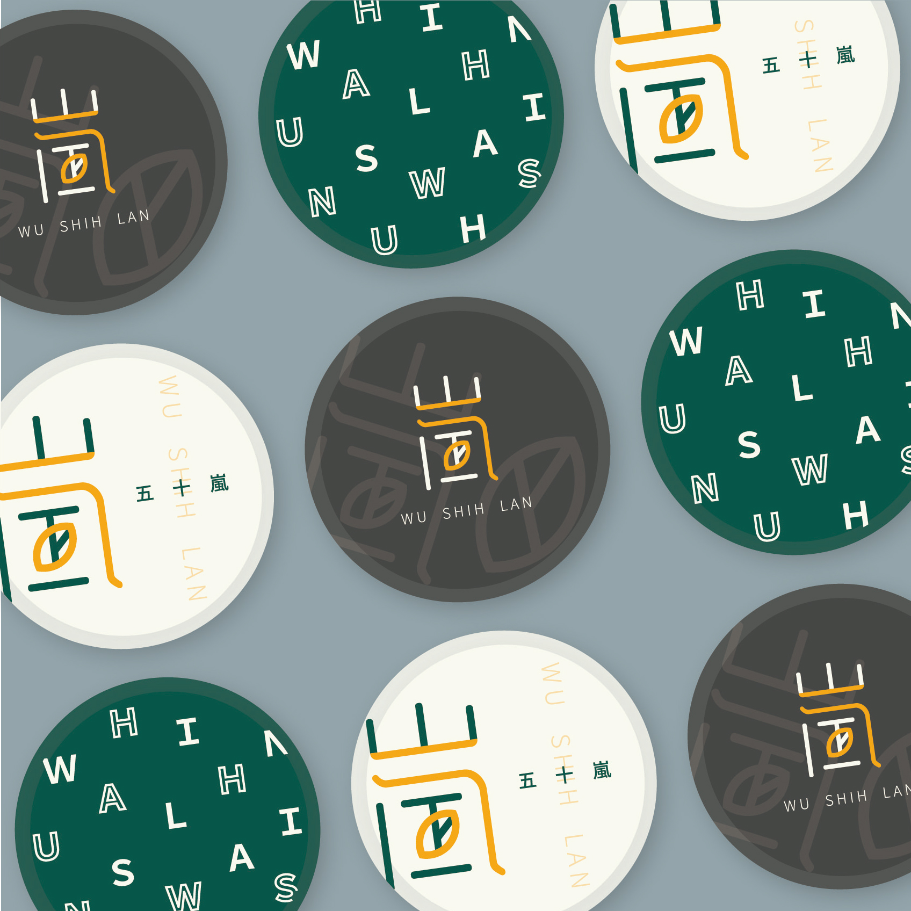
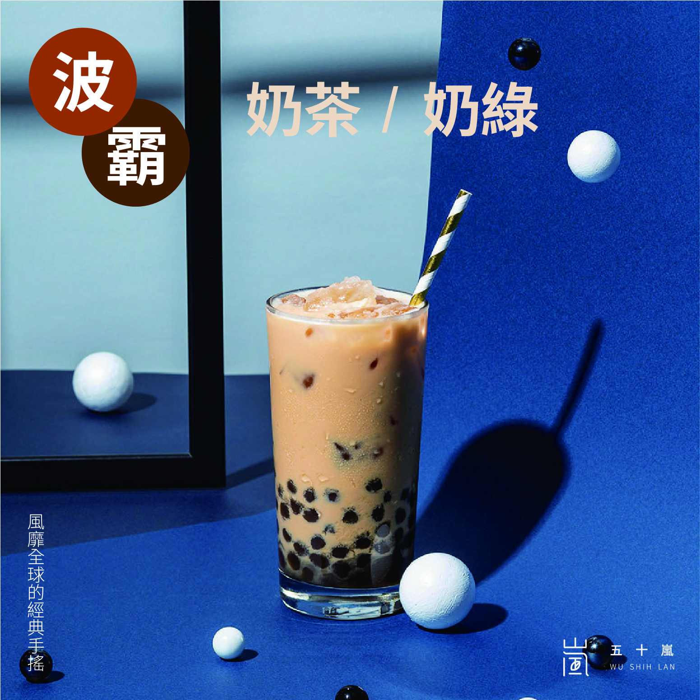
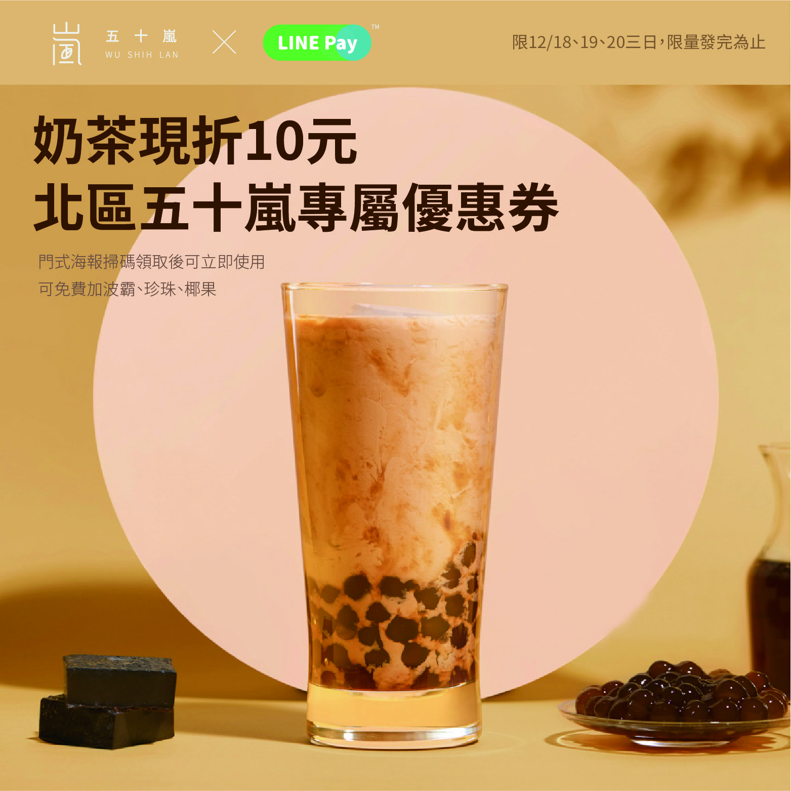
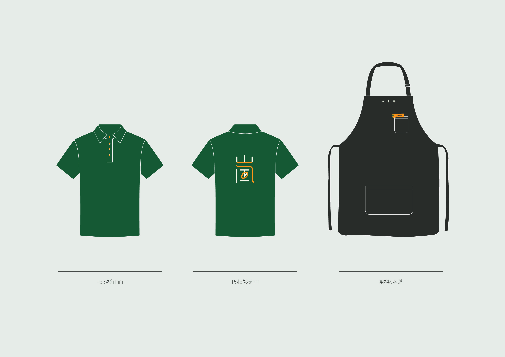

關於五十嵐
1994.03 馬媽媽加盟“某某香雞排”，由於生意良好，因應顧客群要求同時販售飲品，馬大哥退伍，接下任務，開始飲品攤販的生意。
1994.08 50嵐第一間攤販式的吧檯誕生！僅花費了一萬元，由馬大哥規劃設計、馬爸爸手工訂製、再加上馬二姐親手縫製的綠白條紋帆布頂蓋上便完成了。開店時只準備了一條杯子、一桶果糖、新鮮水果、一斤紅、綠茶葉，便開始販售飲料，以果汁飲品為主。
1995.03 由於飲料攤販的生意越來越好，但並無任何店名，無法讓人印象深刻。在一個偶然的機會中，馬大哥看到日本的一個姓氏叫“50嵐”，當時純粹只覺得好記，所以把這間店取名為“50嵐”，”50嵐”就這樣一直沿用至今。
1995.08 由於果汁準備工作相當複雜，且新鮮水果保存期限不長，加上茶飲販售屢創佳績，遂漸漸的將營運重心轉移至茶飲，果汁到後期便停止銷售。
1995.08 攤販式的設施因為生意太好而不敷使用，一年後便擴大經營改為騎樓下吧檯式營業。
1997.02 馬大哥與馬二姐一同籌畫50嵐之創始店。
1997.04 50嵐第一間模範店成立，位於台南市新孝路上，當時由馬大哥與馬二姐全職經營50嵐。
1998.05 第二間掛著相同招牌的50嵐也在親友的支持下，接續開張。
當時懵懵懂懂，並不了解這就是加盟的概念，因此默默地蘊釀出50嵐綠茶連鎖加盟體系的事業。
CIS企業識別設計








